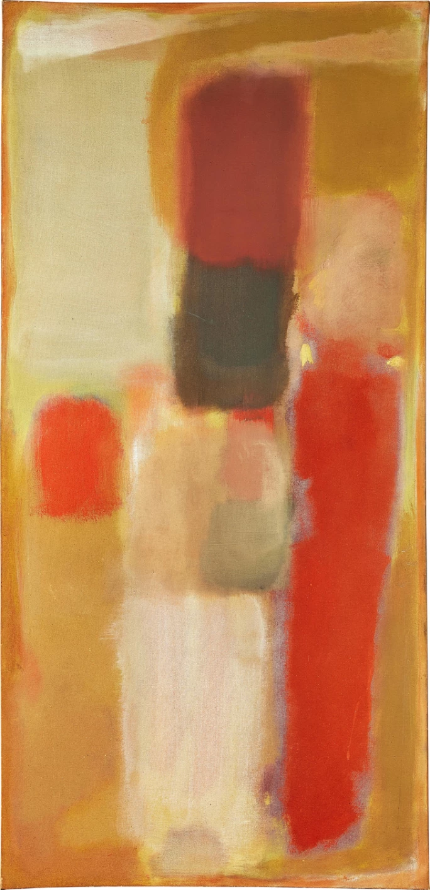
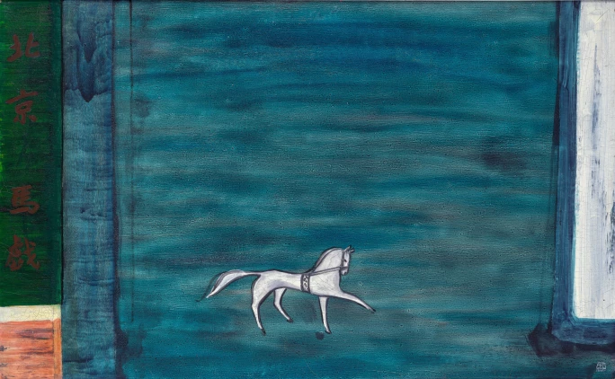

譯自 Marian Ang · Sotheby's
抽象表現主義浪潮席捲之際，常玉在1948至1950年旅居紐約。這段異鄉歲月深刻重塑了他的藝術語彙，更孕育出《北京馬戲》這幅極具視覺張力的曠世奇作。適逢此件珍罕的博物館級鉅作首度面世舉拍，我們將帶領讀者追溯這位法籍華裔畫家從1920年代巴黎走向戰後美國的藝術蛻變之旅。
放眼兩次世界大戰期間的巴黎，常玉可說是最聲名卓著的華裔藝術家，其創作深刻改寫了中國現代藝術的發展軌跡。他大膽突破西方油畫的傳統藩籬，將中國水墨畫中雋永而簡練的意韻展現得淋漓盡致。素有「東方馬蒂斯」美譽的常玉，堪稱巴黎畫派世界主義現代性的完美化身。他那極具視覺張力、簡約卻直擊人心的繪畫語言，成功俘獲了全球各界人士的心。從中國藝術大師徐悲鴻，到深具影響力的法國藏家兼畫商亨利·皮爾·侯謝（Henri-Pierre Roché）以及瑞士裔美國攝影師羅伯特·法蘭克（Robert Frank），皆是他的忠實仰慕者。
縱觀常玉的生命與創作歷程，馬匹始終是一個引人入勝且極具分量的核心主題。常玉在1895年出生於四川南充的富裕人家，家族經營當地首屈一指的絲織廠。年少時的他曾師從四川書法名家趙熙（1877至1938年），並得益於擅長畫馬的父親親自指點。1921年，常玉隨當時的留洋熱潮遠赴巴黎，與他同期的還包括徐悲鴻。後來徐悲鴻學成歸國，成為備受尊崇的藝術大師與學者。然而常玉卻選擇了截然不同的道路，他全心擁抱巴黎的波希米亞式生活，同時也承受了隨之而來的種種艱難與考驗。1928至1931年間，他與大茅舍藝術學院的藝術系學生瑪賽爾·夏洛特·居約·德·拉·阿杜葉爾（Marcelle Charlotte Guyot de la Hardrouyère）結為連理。常玉生性幽默，為妻子取了一個俏皮的中文暱稱「瑪」（音同「馬」）。據瑪賽爾回憶，常玉對畫馬情有獨鍾。他在描繪駿馬時所施展的優雅書法線條與流暢靈動的節奏感，與日後讓他聲名大噪的豐腴裸女畫如出一轍。
隨後的歲月裡，常玉的經濟狀況陷入劇烈動盪。1931年長兄辭世後，常玉來自家族的經濟援助徹底斷絕。儘管他在1929年結識了在巴黎舉足輕重的藏家兼畫商羅謝，但隨著兩人在金錢上的猜忌日深，雙方關係最終在1932年宣告破裂。不過，羅謝早前的鼎力支持確實激發了常玉在藝術上的重大突破。常玉現存最早的油畫作品正是誕生於兩人相識的那一年，而到了翌年，他的作品更成功登上「杜樂麗沙龍」（Salon des Tuileries）的展牆。1932年，常玉締造歷史，成為首位被收錄於國際權威指南《1910至1930年當代藝術家生平辭典》的華人藝術家。
「常玉是一股不容小覷的強大力量，他的創作精準而純粹。那是何等的智慧！何等的技藝！」
— 馬克斯·雅各布（Max Jacob）
飛越大西洋：紐約歲月
在1930年代末至1940年代初的動盪時期，戰火蹂躪歐洲，常玉甚至連購買畫材的錢都難以湊齊。為此，他深信自己發明的「乒乓網球」（一種結合乒乓球與網球的嶄新運動）將是幫助他擺脫貧困的救命稻草。懷抱著這份期盼，他於1948年告別巴黎，遠赴紐約。
在這座大都會尋找落腳處時，常玉結識了瑞士裔美國攝影師兼電影製作人羅伯特·法蘭克。法蘭克於一年前抵達紐約，日後被藝評界盛讚為「新攝影界的馬奈」。當時法蘭克正計劃前往巴黎長住，兩人原本協議交換工作室，但計畫生變，法蘭克最終留在紐約。機緣巧合下，兩人成為室友，同住在法蘭克位於東11街53號的工作室內。這對看似背景迥異的知音，自此結下了持續一生的深厚友誼。
常玉抵達紐約之時，這座城市正醞釀著翻天覆地的變革。當時的「抽象表現主義」與其說是一場藝術運動，不如說是一種時代現象。這個詞彙被用作形容那些如飛蛾撲火般，被紐約深深吸引而來的藝術家。他們來自西方世界的四面八方，包括鹿特丹的威廉·德·庫寧（Willem de Kooning）、亞美尼亞的阿希爾·戈爾基（Arshile Gorky），以及懷俄明州的傑克遜·波洛克（Jackson Pollock）。他們在這座城市扎根，與巴奈特·紐曼（Barnett Newman）和阿道夫·戈特列布（Adolph Gottlieb）等紐約本土藝術家並肩創作。雖然這些風格各異的藝術家之間並沒有統一的宣言或理論綱領來凝聚彼此，但我們仍可從馬克·羅斯科（Mark Rothko）與戈特列布在1943年聯名寄給《紐約時報》的一封信中，一窺他們共同的藝術哲思：
「我們推崇以簡單的形式表達複雜的思想。[⋯⋯]畫家普遍認為，只要技巧純熟，畫甚麼並不重要。這恰好是學院派的本質。然而，世上絕無言之無物的佳作。我們堅信主題至關重要，唯有展現悲劇性與永恆性的主題，才具有真正的價值。」
抽象表現主義者將內容置於風格之上、將訊息凌駕於媒介之上。他們毫不妥協的視野與對純粹真實的共同追求，猶如一道驚雷，震撼了當時的藝術界。儘管常玉遠赴美國的初衷是推廣乒乓網球，但置身於這股洶湧澎湃的藝術思潮之中，他無可避免地受到了深深的洗禮。
常玉旅居紐約的時期，恰逢抽象表現主義發展的關鍵分水嶺。1948年，德·庫寧在查爾斯·伊根畫廊（Charles Egan Gallery）舉辦首次個展，展出其極具爆發力的黑白抽象畫。這些作品完美結合了狂放的肢體動勢與複雜的畫面結構。同年，波洛克在貝蒂·帕森斯畫廊（Betty Parsons Gallery）發表了他轟動一時的「滴畫」系列。在1948至1949年這段創作巔峰期，他於該畫廊一共舉辦了三次展覽。德·庫寧後來評論道「是傑克遜打破了堅冰」。到了1949年8月，《生活》雜誌發表了一篇題為〈傑克遜·波洛克：他是美國在世最偉大的畫家嗎？〉的專題報導，更進一步將全國的目光聚焦於抽象表現主義運動之上。
美國權威藝評家克萊門特·格林伯格（Clement Greenberg）也加入了這場時代浪潮。他在1948年撰寫了極具影響力的文章《立體主義的衰落》。他在文中指出，昔日獨領風騷的巴黎畫派正逐漸被抽象表現主義畫家所取代，以至於「西方藝術的核心陣地終於轉移到了美國」。
「一幅畫並非描繪經驗的圖像，它本身就是一種經驗。」
— 馬克·羅斯科

馬克·羅斯科，《10號》，油畫畫布，154.5 x 75 公分 | 估價: 28,000,000 - 40,000,000港元
在行動畫派屢屢攻佔新聞版面的同時，另一股更為沉靜卻可能影響更為深遠的藝術趨勢正在悄然萌芽，為抽象表現主義指引出新的前進方向。這股潮流由色域畫家馬克·羅斯科、巴奈特·紐曼與克里夫·斯蒂（Clyfford Still）領軍。1949年，羅斯科在貝蒂·帕森斯畫廊首次展出他的「多形態」畫作，宣告他正式揮別超現實主義與具象繪畫。羅斯科早年流離失所、無根無萍的漂泊感，與常玉的遭遇產生了靈魂深處的共鳴。他出生於俄羅斯帝國猶太定居點的德文斯克，十歲時移居美國，卻始終對這個新國度感到疏離。其傑出作品中那種陰鬱而神秘的氣質，正是源於這份早年創傷，並孕育出「感官性」與「死亡性」這兩股驅動力，成為他藝術創作的核心基石。到了1950年底，羅斯科發展出如催眠般的矩形構圖，並將此作為他畢生探索的圭臬。這些純色塊面所帶來的強烈直觀衝擊力，與其朦朧顫動的邊緣形成了極致的張力。在1950年代，他多採用令人驚豔且高對比的紅色、橙色與黃色；到了1960年代，則轉為深邃沉鬱的黑色、藍色與紫色。這些作品將觀者溫柔卻無可抗拒地包圍在純粹的人類意識場域之中，使他們獨自沉浸於自身思想的孤寂裡。這種渴望透過「空間編舞」來達到精神超越的訴求，也同樣在常玉的作品中破繭而出，其中最具代表性的巔峰之作便是《北京馬戲》。
告別紐約：邁向表現主義的新紀元
由於缺乏人脈，常玉在美國推廣乒乓網球的計畫寸步難行。與此同時，在摯友法蘭克的鼎力相助下，他在帕斯多瓦畫廊（Passedoit Gallery）展出了29幅從巴黎帶來的畫作，結果卻乏人問津，讓他大受打擊。1950年，常玉離開紐約返回巴黎，臨行前將這29幅作品悉數留給法蘭克，以報答他的深情厚誼。乒乓網球的夢想破滅後，常玉身心俱疲。初抵巴黎時，他只能靠著為家具上漆及打木工零工來勉強度日。然而，命運的齒輪似乎在暗中推波助瀾，常玉最終選擇順應天命，再次向藝術的懷抱敞開大門。
紐約之行在他身上留下了不可磨滅的印記。「終於，」常玉對一位朋友感嘆道，「畫了一輩子，我現在才真正懂得該如何畫畫。」他毅然褪去早期作品中那種明快而率性天真的色彩，全心全意地投入一種嶄新的表現主義。常玉一生中共創作了35幅以馬為主題的畫作。如果說他在1920與1930年代的馬匹畫作是寧靜細膩、以玫瑰粉色為主調的溫婉之作，那麼1940及1950年代的調色盤則是大膽轉向氣勢磅礡、氛圍感十足的風格。這種轉變，正完美呼應了馬匹在其無垠想像的荒野中踽踽獨行的蒼涼與孤寂。

常玉，《北京馬戲》，油畫纖維板，80.3 x 129.5 公分 | 估價: 28,000,000 - 40,000,000港元
重返藝術創作讓常玉煥發新生，他結交了幾位著名的歐洲藝術家，其中包括阿爾伯托·賈柯梅蒂（Alberto Giacometti）與雅克·莫諾里（Jacques Monory）。前者的雕塑散發著鮮明而濃烈的戰後存在主義焦慮，後者以藍色為主調的畫作則深刻揭示了日常生活的暴力。然而，由於性格特立獨行且不願妥協，常玉與華人藝術家圈子之間的互動依然充滿張力與摩擦。
常玉對故土文化那種既深愛又疏離、既熟悉卻又遙不可及的矛盾情感，在他這一時期的畫作中展露無遺。他大膽而簡練的筆觸洋溢著一種前所未有的自信。藉由在巴黎一家中國漆器工坊工作的經歷，常玉筆下的書法線條開始巧妙融入傳統東方雕漆圖案中豐富的圖解語彙。然而，當觀者的目光沉浸在《北京馬戲》那由深邃群青與青綠色交織而成的廣袤色塊時，卻又會不禁聯想到羅斯科色域繪畫中所營造的那種攝人心魄的心理空間。在中國美學，藍色往往象徵一種深沉冥想卻又刺骨的哀愁，而這種情緒正透過藝術家醇厚的筆觸，在整幅畫面上氤氳蔓延。
「畫家正是空間的編舞者。」
— 巴奈特·紐曼
常玉筆下的北京馬戲團馬匹，擁有高挺的頸部、厚實的鬃毛與高貴的面容，宛如中國傳說中赫赫有名的的大宛「汗血寶馬」。這些來自現代烏茲別克費爾干納盆地的超凡神駒，被古人視為能夠流出如血般汗水的神獸，更是無上皇權的重要象徵。牠們在中國藝術史中備受尊崇。最早以陶器、石雕和青銅為材質的馬匹形象，皆出土於古代貴族的陵墓之中。其中最負盛名的代表作，莫過於漢代（公元前206年至公元220年）的文化瑰寶「馬踏飛燕」。這件青銅雕塑生動定格了一匹駿馬凌空飛馳、完美平衡於展翅飛燕背上的絕妙瞬間。
在常玉目前已知三幅帶有題字記錄的馬戲團主題作品中，《北京馬戲》的尺幅最為宏大。考量到常玉當時的經濟窘境幾乎讓他無力支撐這類巨幅創作，這無疑是一項極具震撼力的藝術宣言。隻身一人沉浸在遠離故土的異鄉世界裡，《北京馬戲》化作一個強而有力的隱喻，不僅濃縮了藝術家跌宕起伏的過去、煥然一新的現在，更寄託了他對未來的無限希冀。
哈囉常玉
老朋友，
你已經走了一段很長的路，而現在你回來了。
帶著你的靈魂、你的夢想、你的畫作。
那些長著小腳的粉色裸女
在壯闊卻空蕩的風景裡孤單孑立的動物
如此優雅而冷冽的花朵
今天，你會感到驚訝嗎？
多年前，當我從紐約抵達
按響你在巴黎工作室的門鈴
你打開門，看著我，
每一次你都會問：
「你在這裡做甚麼？」
—— 羅伯特·法蘭克（1997年）
在常玉畢生創作的35幅馬匹畫作中，有六幅被列為永久館藏，分別珍藏於台北國立歷史博物館與北京中國美術館，另有一幅曾由法國駐阿根廷大使館收藏。這六幅曠世之作皆出自常玉1940年代後的戰後時期。本拍賣季，香港蘇富比深感榮幸，能將《北京馬戲》首度呈獻於拍場之上。這是一件極為珍罕的博物館級鉅作，其卓越的藝術造詣與耀眼光芒，絕對足以與前述頂級美術館的館藏並駕齊驅。